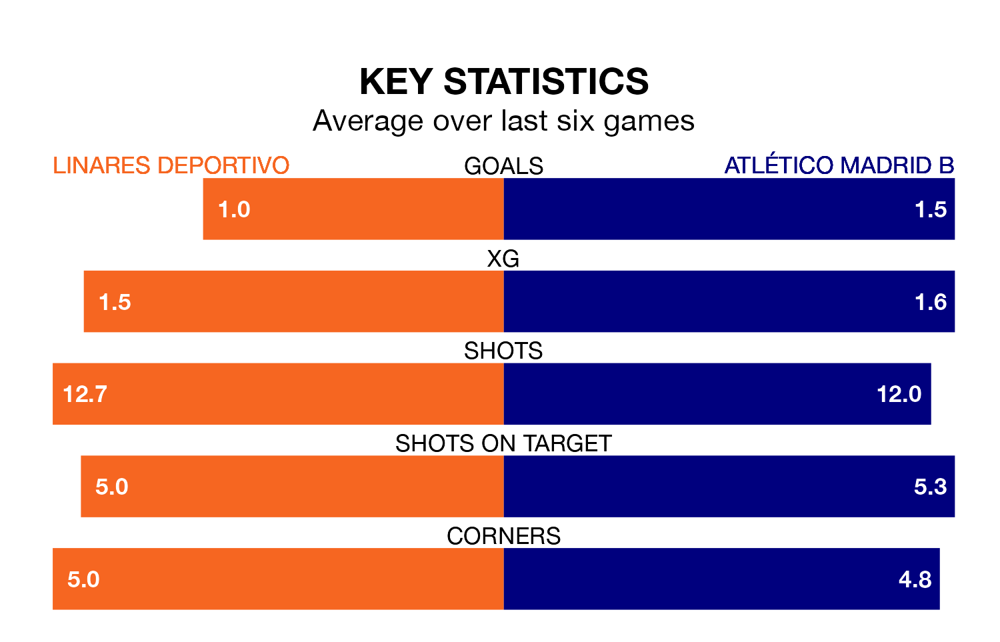

Atlético Madrid B travel to Linares Deportivo on late Sunday in Primera Division RFEF Group 2.
The visitors come into the game on the back of a win in their last match, having beaten Algeciras CF 3-1 at home, with goals from Nabil Zoubdi Touaizi, Sergio Guerrero Romero and Pablo Pérez Rico.
Linares Deportivo also won their last match, 4-1 against Recreativo de Huelva, with their goals scored by Antonio Marín Molina and Samuel Corral Valero.
With 50 goals in 34 games so far this season, Atlético Madrid B are scoring more than average in the league with 1.5 goals per game. But they are conceding more than average too, letting in 40 goals at a rate of 1.2 per game.
Linares Deportivo, meanwhile, are below average scorers, with 0.9 goals per game, compared to a league average of 1.1. They have conceded 1.3 goals per game.
The hosts are 16th in the table after 34 games, of which they have won 10 and drawn eight, earning 38 points.
The away team are seven places ahead of Linares Deportivo in ninth, with 12 wins and 12 draws putting them on 48 points.
In Diego Vicente Bri Carrazoni, Atlético Madrid B have one of the league's most on-form strikers so far this season. He has notched seven goals in 21 appearances, to sit sixth in the scoring charts.
His goal rate of one every 208 minutes is quicker than that of Antonio Luis Díaz Sánchez, Linares Deportivo's top scorer with a goal every 245 minutes, and a total of five goals in 22 games.
The home side are in mixed form in Primera Division RFEF Group 2, with two wins and two draws from their last six games.
With four wins and two losses over that period, Atlético Madrid B's form is better – they have taken 12 points from 18, compared to Linares Deportivo's eight.
Updated: 10:44 (UTC), 30/04/24